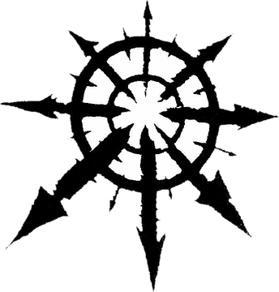

Sons of Horus
| Sons of Horus XVI Legion · Luna Wolves · Black Legion | |
|---|---|
 | |
| Founding | First Founding, c. 700.M30[a], in the late Unification Wars |
| Legion number | XVI |
| Primarch | Horus (found 801.M30, slain 014.M31) |
| Present leader | Abaddon the Despoiler, Warmaster of Chaos |
| Homeworld | Cthonia, Segmentum Solar (recruiting world); Terra (origin) |
| Fortress | Lupercalios on Maeleum, in the Eye of Terror (formerly); the Black Fleet |
| Allegiance | Loyalist (until 005.M31); Traitor, Chaos Undivided |
| Colours | Luna Wolves: white. Sons of Horus: sea green. Black Legion: black and gold |
| Battle cry | "Lupercal!" and "For Horus and the Emperor!" (before); "We are returned!" and "Death to the False Emperor!" (after) |
| Organisation | Before: Legion companies, the Mournival, the 1st Company Justaerin. After: warbands under Chaos Champions |
| Notable battles | |
| Ullanor; Isstvan III; Drop Site Massacre; the Siege of Cthonia; Siege of Terra; thirteen Black Crusades; the Fall of Cadia | |
| Notable members | |
| Horus, Ezekyle Abaddon, Horus Aximand, Tarik Torgaddon, Garviel Loken, Maloghurst, Falkus Kibre, Iskandar Khayon, Zaraphiston | |
The Sons of Horus, called the Luna Wolves in the first age of the Great Crusade and the Black Legion since the death of their Primarch, were the XVIth Legion of the first Space Marines. They were raised on Terra and, with their primarch Horus, became the most celebrated of the Emperor's armies. When Horus rebelled against the Emperor of Mankind in the Horus Heresy, the Sons of Horus were his chief instrument. They fought through the Heresy to the walls of the Imperial Palace, were driven out when Horus was killed, and fled to the Eye of Terror. Under their First Captain, Ezekyle Abaddon, they reformed as the Black Legion, the first in infamy of the Traitor Legions.[1]
The Black Legion's goal, set by Abaddon, is to finish what Horus began. Thirteen times it has gone out of the Eye in a Black Crusade. In the last, the 13th, in 999.M41, it destroyed the fortress world of Cadia and with it the greatest barrier on the road to Terra. Its warbands, its pacts with daemons and its alliance with the other Traitor Legions make it the most dangerous enemy of the Imperium of Mankind after the daemons themselves. Imperial scholars record the history of the Legion in three ages, under three names, and the argument over what the Legion was and might have been is one of the grimmest in the archives.[2]
History
[edit]The Wolves of Terra
[edit]The XVIth Legion was one of the first formed in the closing years of the Unification Wars, from Terran volunteers and from the conquered enemies of the Emperor. Many early recruits came from the hunter clans of the Jutigran Bowl and the slums of the Samsatian sub-plate, hard people for whom ruthlessness and independence were habits of survival. In its early days the Legion was the Emperor's shock force: it delivered sudden and overwhelming assaults and ended campaigns. The First Pacification of Luna, in 703.M30, gave it the name it kept for three centuries, until 003.M31. The Legion served in the conquest of the Sol System before the Great Crusade began.[3]
The Luna Wolves were the first Legion to recruit away from Terra. Their new source was Cthonia, a former mining world of the Segmentum Solar that had been stripped of its resources and had fallen into a feral state: a world of tunnels and ruins in which gangs of adolescents fought for survival. The Cthonians brought into the Legion a gangland ethic of loyalty, violence and prestige. Warriors began to wear Cthonian topknots and mohawks, to scratch the eye-socket of their helms when they wounded an enemy worth honouring, and to speak a word that meant the cutting of a throat. As the older Terran Legionaries died, the Cthonian tradition outnumbered the Terran, and the Legion remained divided along lines of origin that should have been washed away by the Legion's rites.[3]
Horus Lupercal
[edit]
Horus was the first of the primarchs to be recovered, in 801.M30. His capsule had been cast into the Warp not far from Terra, onto Cthonia, and he was found at a much younger age than his brothers. The Emperor put him at the head of the Legion, and their campaigns were swift and loved by the Remembrancers. The Legion's approach was to identify an enemy's leadership, isolate it and destroy it, then move on without looking back. This brought a great number of worlds into the Imperium, more than any other Legion, and it brought honours to Horus as the Emperor's favourite son.[3]
In 000.M31, in the Triumph of Ullanor, the Emperor named Horus Warmaster, and gave him authority over all of the Imperium's armies and generals, and returned to Terra. Many primarchs resented the decision. Horus is recorded as having thought privately that Sanguinius should have had the title.[4]
The fall to Chaos
[edit]In 003.M31, at the suggestion of Sanguinius, Horus took up the Emperor's earlier offer to rename the Legion, and the XVIth became the Sons of Horus. In 004.M31, while campaigning on the moon of the world Davin, Horus fell sick of a wound from an artefact of Nurgle's making, the Anathame, and could not be healed. The Legion had earlier adopted the Davinite institution of the warrior lodges, which started as fraternities and became tools. The priests of the Serpent Lodge took Horus into their temple and healed him with the touch of the Ruinous Powers, and Lorgar and his First Chaplain, Erebus, who had prepared the ground, claimed him. In the days that followed, his officers saw that he had changed. He used the lodges to bind his captains to himself. Horus turned against the Emperor and brought the Legion with him into the worship of the Chaos Gods.[2]
Not all of his warriors followed. When the Warmaster resolved to remove the loyalists from his own Legion and from the Emperor's Children, Death Guard and World Eaters, he did so at Isstvan III in 005.M31. The Loyalists were set to fight the world's population in the Choral City while a virus bomb was prepared. Death Guard Captain Nathaniel Garro saw the plan and fled to carry the warning to Terra. The planet's surface was devastated.[2] Seven Legions were sent against the four Traitor Legions; four of the seven were sworn to Horus, and the Drop Site Massacre of Isstvan V followed in 006.M31.[2]
The Horus Heresy
[edit]
In the early years of the war the Sons of Horus fought on many fronts. Rogal Dorn sent Imperial Fist, Space Wolf and Custodian forces to Cthonia in 006.M31, under Lord Castellan Evander Garrius, and the garrison was driven into the underworld to fight a guerrilla war. After the battle of Beta-Garmon, a Traitor fleet led by Vheren Ashurhaddon and supported by Word Bearers, Alpha Legion and Dark Mechanicum forces invaded the world in 013.M31 to take it back. The Loyalist defenders, supported by Thousand Sons and Shattered Legions, inflicted heavy losses and destroyed the Traitors' titan reserves, but they were slowly driven back to the hive city of Traitor's Gate.[2]
On Terra, the Sons of Horus were on the front line. The Mournival, Horus's four counsellors, had been fractured: the Captains Horus Aximand and Ezekyle Abaddon followed him, Tarik Torgaddon died in the early war, and Garviel Loken became a Loyalist. The latest Imperial chronicles of the siege record that Loken fought his way into the Palace and very nearly killed Abaddon, and that many loyal warriors died in the attempt. This supersedes older accounts in which Abaddon is described only as having escaped. Horus fell to the Emperor aboard the Vengeful Spirit in 014.M31, and the Warmaster's army broke.[2]
The Black Legion
[edit]Abaddon and the surviving Sons of Horus broke orbit and fled in the Great Scouring into the Eye of Terror, a fraction of their strength. Their loyalty to the dead primarch and the cold fact of their defeat divided them. Abaddon himself, sick of the war, wandered into the Eye alone, while the Legion carried Horus's body in stasis to the daemon world of Maeleum, a graveyard of steel and rust. There they built a fortress, Lupercalios, from the wrecks of dead ships, and laid Horus in a great tomb where many fell to worshipping him as a god. The body was used in attempts to clone the primarch; Abaddon later returned and had it destroyed so that it could never be used again.[2]
Abaddon returned to the Legion some time before 781.M31,[a] subdued those who would not follow him, and took command. In a decision that Black Legion tradition regards as the founding act, he abandoned the name of Horus and renamed it the Black Legion, in black and gold, "from shame and shadow recast". Any Traitor Space Marine who bowed to the Despoiler was welcome. Many of the Sons of Horus did not accept the change: those who remained loyal to Horus's memory or to no master became the Thrice-Cursed Traitors. They include the Sons of the Eye under Drecarth the Sightless, with whom Abaddon made a wary truce during the 6th Black Crusade.[2]
The Black Crusades
[edit]
In 781.M31 Abaddon went out of the Eye at the head of the greatest Traitor host since the Heresy. The Imperium withdrew many of its new Chapters from other fronts. Only Cadia, with its fortifications, held. The Black Legion captured worlds in a series of atrocities whose warlords vied with each other: Zagthean the Broken built a maze of blood-roses on Valesia; Eralak hanged millions from the wrecks of Melphia's floating cities. During the First Black Crusade Abaddon found the Tower of Silence on Uralan, where the Dark Gods had locked away their secrets, and took from it the daemon-sword Drach'nyen. He fought the High Marshal of the Black Templars, Sigismund, on the deck of the Eternal Crusader, and was wounded in the chest by the Black Sword, a scar that he would bear for ten thousand years. He took the title of Warmaster of Chaos.[2]
Twelve more crusades followed. Between them the Legion raided constantly, and Abaddon gave his warlords license in return for atrocities that were committed in the name of the Black Legion. In 777.M41 a fleet in the Cadian System was driven back at the Iron Labyrinth. In the Pandorax Campaign of 959–961.M41 Abaddon opened a portal on the death world of Pythos, the Damnation Cache, before the Dark Angels and Grey Knights closed it. He took with him a rogue psyker whom he would use in the next crusade. In 999.M41 the 13th Black Crusade, with Blackstone fortresses and a Traitor host, shattered Cadia and brought the Great Rift.[5]
After the Fall of Cadia
[edit]Since the opening of the Great Rift the Black Legion has moved beyond the Eye. The latest Imperial records speak of Abaddon's agents, called the Hand of Abaddon, active during the Indomitus Crusade, and of a campaign, called the Arks of Omen, in which the Warmaster took the Vengeful Spirit and a daemon world into the Webway in search of a weapon with which to destroy the Imperium. The location of his flagship is not known. Roboute Guilliman's return and the Indomitus Crusade are recorded as having prevented the Warmaster from reaching Terra.[5] The Black Legion's agents have also been recorded in the Red Corsairs' war on the Yasan Sector and in other Traitor operations.
Organisation
[edit]Before the Heresy
[edit]Horus's command was absolute. Under him were his captains and sergeants, and a squad leader with field command was called a chieftain. The Legion's formal structure concealed a complex hierarchy of prestige: of long service and honours, and of blood and origin. The elite of the Legion was the 1st Company, the Justaerin, led by First Captain Ezekyle Abaddon. The Legion's inner council was the Mournival, four captains who met by moonlight, each with a phase of the moon on his helm, and who served the primarch as counsellors and naysayers. Its members at the Heresy were Abaddon, Horus Aximand, Tarik Torgaddon and Garviel Loken. Maloghurst the Twisted, a captain crippled in battle, served as Horus's equerry and spymaster. The Legion also fielded Cataphracti Terminators and a large armoured arm.[3]
The Black Legion
[edit]After Horus's death the Legion fragmented into warbands led by Chaos Champions. The whole Legion gathers only when Abaddon launches a Black Crusade. His personal guard, drawn from the strongest of his Terminators, is the Aphotic Blade. The Hounds of Abaddon are berserker devotees of Khorne; the Bringers of Decay serve Nurgle; the Children of Torment follow Slaanesh. His chief lieutenants are the Chosen of Abaddon, who include the Lords Ravager, Deceiver, Corruptor and Purgator. Urkrathos, the Lord Purgator, commands the Black Fleet and the Hounds. Sorcerers such as Iskandar Khayon, once of the Thousand Sons, and Zaraphiston, who guided Abaddon to a prophecy on an Aeldari crone world, serve the Warmaster.[2]
Combat doctrine
[edit]Before the Heresy, the Sons of Horus were known for overwhelming force applied at the point where an enemy was weakest. They attacked command cadres and the supply that held a force together, and often decided campaigns with a single savage blow. They were flexible, and surrounded and tore apart a weak or exposed foe before it could recover. After Horus's betrayal the Legion became more savage and proud. It uses daemon engines, Blackstone fortresses, sorcery and the rage of its Khornate devotees, and its warlords have a freedom to raid that Abaddon permits so long as the deed is done in the Legion's name.[2]
Homeworld
[edit]Cthonia was the Legion's recruiting world. It was colonised in the first age of human space travel and stripped of its resources long before the Age of Strife. Beneath its surface lie the gang-ruled catacombs that shaped the Legion's character. The Black Legion has no homeworld; its fleets stay in the Eye of Terror, in the daemon worlds of Maeleum and others, and in raiding fleets beyond.[2]
Beliefs
[edit]The belief of the Legion before the Heresy was in the superiority of Horus and of themselves, his sons. In their drive to prove themselves the greatest Legion, they brought more worlds into the Imperium than any other. The defeat at Terra and the exile to the Eye was a crushing blow, which Abaddon turned into a purpose: to destroy all that the Emperor made and raise the Legion up as rulers of the galaxy in the names of the Ruinous Powers. The Black Legion worships Chaos Undivided, and so the whole pantheon. Its warbands are devoted to Khorne, Nurgle, Slaanesh, Tzeentch or all four.[2]
Gene-seed
[edit]The Legion's gene-seed was pure and potent before Davin, being drawn from the genome of Horus. After Horus's corruption, its Space Marines began to show random mutations, and the practice of seeking daemonic possession has accelerated them. They are worn with pride as signs of favour. The Legion can no longer reliably produce new Space Marines from its gene-seed, whose organs will not grow or are so warped that they kill the human subject, and so it seeks the uncorrupted gene-stocks of Imperial Chapters.[2]
Heraldry
[edit]The Luna Wolves wore white armour and a wolf's-head emblem; the Sons of Horus wore sea green, with the Eye of Horus, an eye with a downward-pointing stylus, as their emblem. The Black Legion wears black and gold, and its Eye of Horus is set in a Chaos star in the Legion's colours. Its warbands carry the symbols of their own masters, and the warriors of the Legion wear trophies and daemonic marks.[2]
Notable members
[edit]- Horus, primarch and Warmaster
- Abaddon the Despoiler, First Captain and Warmaster of Chaos
- Horus Aximand, called Little Horus, captain
- Tarik Torgaddon, captain, member of the Mournival
- Garviel Loken, captain, member of the Mournival, later a Loyalist
- Maloghurst the Twisted, equerry
- Falkus Kibre, captain
- Drecarth the Sightless, warlord of the Sons of the Eye
- Urkrathos, Lord Purgator
Timeline
[edit]| Date | Event |
|---|---|
| c. 700.M30 | The XVI Legion is raised on Terra in the First Founding.[a] |
| 703.M30 | The First Pacification of Luna; the Legion is named the Luna Wolves. |
| 798.M30 | The Great Crusade begins. |
| 801.M30 | Horus is found on Cthonia and given command; Cthonia becomes the Legion's recruiting world. |
| 941.M30 | The Luna Wolves bring Davin to compliance and adopt its warrior lodges. |
| 000.M31 | The Ullanor Crusade; Horus is named Warmaster at the Triumph. |
| 003.M31 | The Legion is renamed the Sons of Horus; the First War of Xenobia destroys the Interex. |
| 004.M31 | Horus is wounded on the moon of Davin and falls to Chaos. |
| 005.M31 | Isstvan III: the Legion's loyalists, among them Garviel Loken and Tarik Torgaddon, are purged. |
| 006.M31 | The Drop Site Massacre on Isstvan V; Imperial Fists, Space Wolves and Custodians land on Cthonia. |
| 009.M31 | Horus leads the Legion in the Battle of Molech. |
| 010–013.M31 | The Battle of Beta-Garmon; in 013.M31 a Traitor fleet invades Cthonia. |
| 014.M31 | Siege of Terra; Horus is slain by the Emperor aboard the Vengeful Spirit and the Legion flees to the Eye of Terror. |
| M31 | The Legion is broken at Canticle City in the Legion Wars; Horus's body is laid at Lupercalios on Maeleum.[a] |
| Before 781.M31 | Abaddon destroys Horus's body and refounds the Legion as the Black Legion.[a] |
| 781.M31 | The First Black Crusade; Abaddon takes Drach'nyen and is named Warmaster of Chaos. |
| 959–961.M41 | The Pandorax Campaign on Pythos. |
| 999.M41 | The Thirteenth Black Crusade destroys Cadia; the Great Rift opens. |
| Early M42 | The Arks of Omen campaign in the Webway. |
See also
[edit]
Chaos portal Horus Heresy portal
Horus Heresy portal
Notes
[edit]References
[edit]- ^ Codex: Adepta Sororitas (8th Edition), pg. 25. Games Workshop. Codex Adeptus Astartes - Space Marines (8th Edition), pp. 18-19. Games Workshop.
- ^ a b c d e f g h i j k l m n o Codex Heretic Astartes - Chaos Space Marines (8th Edition), pp. 17-25. Games Workshop. Codex Heretic Astartes - Chaos Space Marines (8th Edition) (Revised Codex), pp. 17-25. Games Workshop.
- ^ a b c d Abnett, Dan. Horus Rising (novel). Black Library. McNeill, Graham. False Gods (novel). Black Library.
- ^ Counter, Ben. Galaxy in Flames (novel). Black Library. Counter, Ben. The Flight of the Eisenstein (novel). Black Library.
- ^ a b McNeill, Graham. Fulgrim (novel). Black Library. McNeill, Graham. Mechanicum (novel). Black Library.